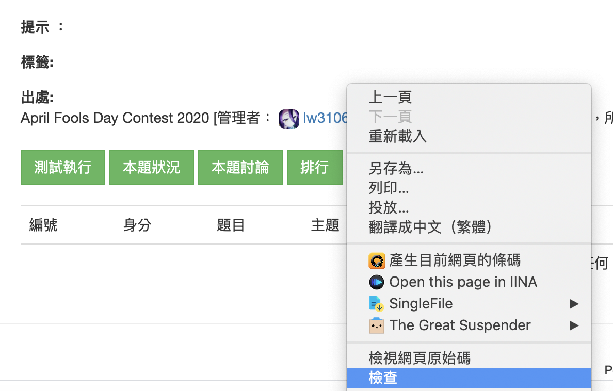
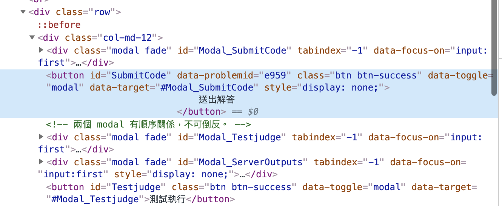
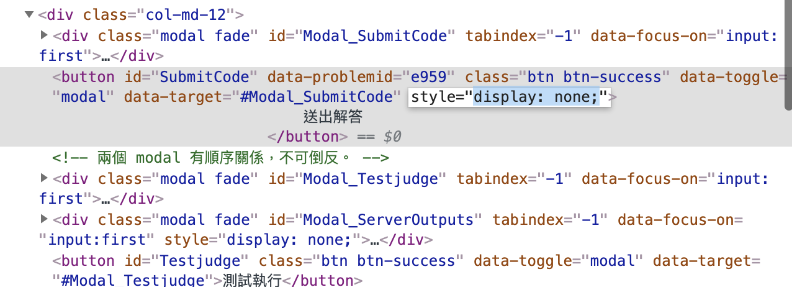
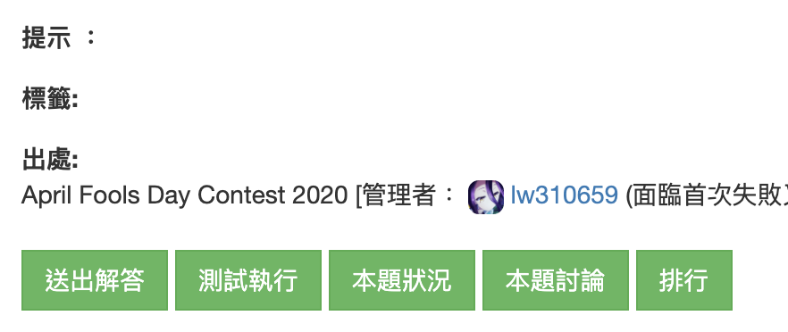
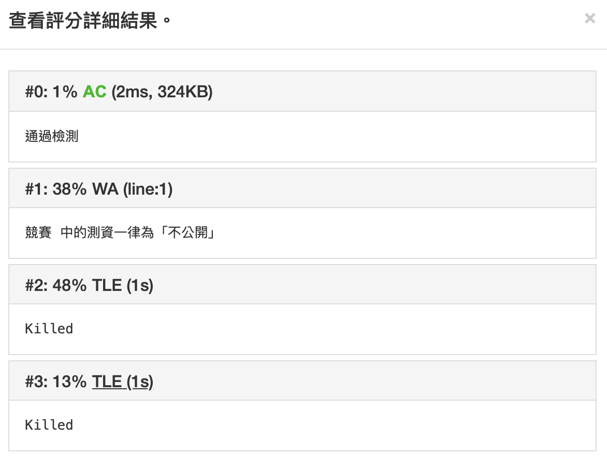
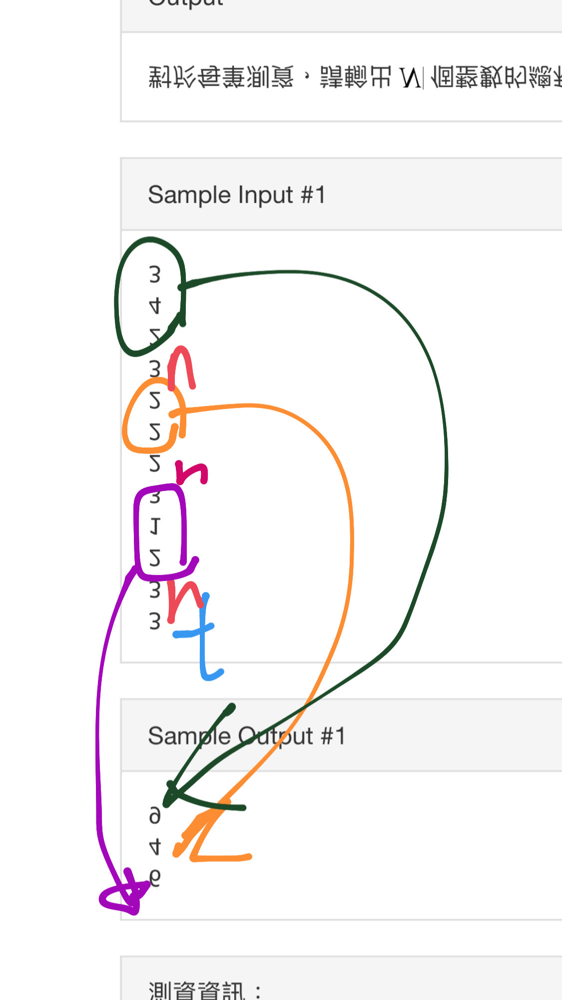
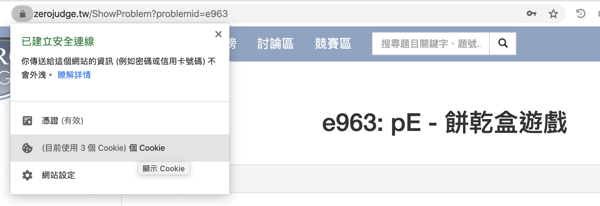
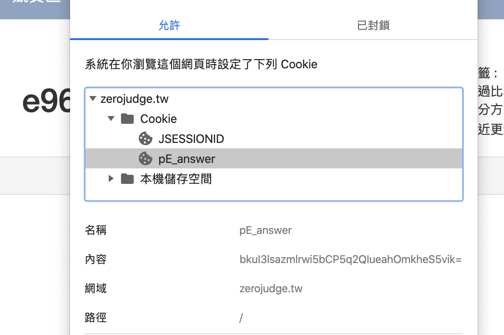

<!DOCTYPE html>
<html lang="zh-TW">


<head><meta name="generator" content="Hexo 3.9.0">
  <!-- hexo-inject:begin --><!-- hexo-inject:end --><meta charset="UTF-8">
  <link rel="apple-touch-icon" sizes="76x76" href="/img/apple-touch-icon.png">
  <link rel="icon" type="image/png" href="/img/favicon.png">
  <meta name="viewport" content="width=device-width, initial-scale=1.0, maximum-scale=1.0, user-scalable=no, shrink-to-fit=no">
  <meta http-equiv="x-ua-compatible" content="ie=edge">
  
  <meta name="theme-color" content="#2f4154">
  <meta name="description" content>
  <meta name="author" content="Jerry Yang">
  <meta name="keywords" content>
  <title>ZeroJudge April Fools Contest 2020 解題心得 - Jerry Yang&#39;s Blog</title>

  <link rel="stylesheet" href="https://cdn.staticfile.org/twitter-bootstrap/4.4.1/css/bootstrap.min.css">
<link rel="stylesheet" href="https://cdn.staticfile.org/github-markdown-css/4.0.0/github-markdown.min.css">


  <link rel="stylesheet" href="https://cdn.staticfile.org/highlight.js/9.18.1/styles/github-gist.min.css">


<!-- 主题依赖的图标库，不要自行修改 -->
<link rel="stylesheet" href="//at.alicdn.com/t/font_1749284_fmb4a04yx8h.css">

<link rel="stylesheet" href="//at.alicdn.com/t/font_1736178_ijqayz9ro8k.css">


<link rel="stylesheet" href="/css/main.css">

<!-- 自定义样式保持在最底部 -->


<link rel="alternate" href="/atom.xml" title="Jerry Yang's Blog" type="application/atom+xml"><!-- hexo-inject:begin --><!-- hexo-inject:end -->
</head>


<body>
  <!-- hexo-inject:begin --><!-- hexo-inject:end --><header style="height: 70vh;">
    <nav id="navbar" class="navbar fixed-top  navbar-expand-lg navbar-dark scrolling-navbar">
  <div class="container">
    <a class="navbar-brand"
       href="/">&nbsp;<strong>Jerry Yang's Blog</strong>&nbsp;</a>

    <button id="navbar-toggler-btn" class="navbar-toggler" type="button" data-toggle="collapse"
            data-target="#navbarSupportedContent"
            aria-controls="navbarSupportedContent" aria-expanded="false" aria-label="Toggle navigation">
      <div class="animated-icon"><span></span><span></span><span></span></div>
    </button>

    <!-- Collapsible content -->
    <div class="collapse navbar-collapse" id="navbarSupportedContent">
      <ul class="navbar-nav ml-auto text-center">
        
          
          
          
          <li class="nav-item">
            <a class="nav-link" href="https://yangjerry.tw">
              <i class="iconfont icon-home-fill"></i>
              首頁</a>
          </li>
        
          
          
          
          <li class="nav-item">
            <a class="nav-link" href="/">
              <i class="iconfont icon-rss-fill"></i>
              部落格</a>
          </li>
        
          
          
          
          <li class="nav-item">
            <a class="nav-link" href="/archives/">
              <i class="iconfont icon-archive-fill"></i>
              歸檔</a>
          </li>
        
          
          
          
          <li class="nav-item">
            <a class="nav-link" href="/categories/">
              <i class="iconfont icon-category-fill"></i>
              分類</a>
          </li>
        
          
          
          
          <li class="nav-item">
            <a class="nav-link" href="/tags/">
              <i class="iconfont icon-tags-fill"></i>
              標籤</a>
          </li>
        
          
          
          
          <li class="nav-item">
            <a class="nav-link" href="/about/">
              <i class="iconfont icon-user-fill"></i>
              關於</a>
          </li>
        
          
          
          
          <li class="nav-item">
            <a class="nav-link" href="https://twitch.tw/tico88612">
              <i class="iconfont icon-twitch-fill"></i>
              解題直播</a>
          </li>
        
        
          <li class="nav-item" id="search-btn">
            <a class="nav-link" data-toggle="modal" data-target="#modalSearch">&nbsp;&nbsp;<i
                class="iconfont icon-search"></i>&nbsp;&nbsp;</a>
          </li>
        
      </ul>
    </div>
  </div>
</nav>

    <div class="view intro-2" id="background" parallax=true
         style="background: url('/img/banner.png') no-repeat center center;
           background-size: cover;">
      <div class="full-bg-img">
        <div class="mask flex-center" style="background-color: rgba(0, 0, 0, 0.3)">
          <div class="container text-center white-text fadeInUp">
            <span class="h2" id="subtitle">
              
            </span>

            
              
                <div class="mt-3 post-meta">
                  <i class="iconfont icon-date-fill" aria-hidden="true"></i>
                  <time datetime="2020-04-03 10:02">
                    星期五, 四月 3日 2020, 10:02 上午
                  </time>
                </div>
              

              <div class="mt-1">
                
                  
                  <span class="post-meta mr-2">
                    <i class="iconfont icon-chart"></i>
                    2.6k 字
                  </span>
                

                
                  
                  <span class="post-meta mr-2">
                      <i class="iconfont icon-clock-fill"></i>
                    
                    
                    38
                     分鐘
                  </span>
                

                
                  <!-- 不蒜子统计文章PV -->
                  
                  <span id="busuanzi_container_page_pv" class="post-meta" style="display: none">
                    <i class="iconfont icon-eye" aria-hidden="true"></i>
                    <span id="busuanzi_value_page_pv"></span> 次
                  </span>
                
              </div>
            
          </div>

          
        </div>
      </div>
    </div>
  </header>

  <main>
    
      

<div class="container-fluid">
  <div class="row">
    <div class="d-none d-lg-block col-lg-2"></div>
    <div class="col-lg-8 nopadding-md">
      <div class="container nopadding-md" id="board-ctn">
        <div class="py-5" id="board">
          <div class="post-content mx-auto" id="post">
            
            <article class="markdown-body">
              <p>這次比賽真的蠻有 April Fools 的味道</p>
<p>不過在 ZeroJudge 平台應該是新手居多，可能會有點適應不良，或者不知從何下手</p>
<a id="more"></a>
<p>有些題目也要一些 CTF 的基礎才可能<del>通靈</del>解開來</p>
<p>這次就來一次看清楚吧！</p>
<p><strong>不負責聲明：本人不是出題者，我只是寫我的解題心得而已，要官方題解請找出題者</strong></p>
<h2 id="競賽連結-Contest"><a href="#競賽連結-Contest" class="headerlink" title="競賽連結 Contest"></a>競賽連結 Contest</h2><p><a href="https://zerojudge.tw/ShowContest?contestid=3282" target="_blank" rel="noopener">競賽連結：https://zerojudge.tw/ShowContest?contestid=3282</a></p>
<p></p>
<p>本人 Rank 2/125<br>之前在 TIOJ 打 April Fools 也是拿很前面的名次<br>正常競賽不會打，只會打 April Fools = =</p>
<p>———————————<strong>暴雷分隔線，害怕請避難</strong>————————————</p>
<h2 id="題目-Problems"><a href="#題目-Problems" class="headerlink" title="題目 Problems"></a>題目 Problems</h2><h3 id="pA-Hello-April-Fools-Day-2020"><a href="#pA-Hello-April-Fools-Day-2020" class="headerlink" title="pA - Hello, April Fools Day 2020"></a>pA - Hello, April Fools Day 2020</h3><p><a href="https://zerojudge.tw/ShowProblem?problemid=e959" target="_blank" rel="noopener">題目連結：https://zerojudge.tw/ShowProblem?problemid=e959</a></p>
<p>進來雖然看懂題目了，也寫好了，可是……「送出解答」按鈕呢？</p>
<p>在那裡附近右鍵打開檢查</p>
<p></p>
<p>找到送出「解答按鈕」的元素，你會發現按紐被 <code>display: none;</code> 了</p>
<p></p>
<p>雙擊編輯把 <code>display: none;</code> 去除</p>
<p></p>
<p>送出吧！</p>
<p></p>
<pre><code class="hljs python">print(<span class="hljs-string">'Hello, April Fools Day 2020'</span>)</code></pre>

<h3 id="pB-顛倒"><a href="#pB-顛倒" class="headerlink" title="pB - 顛倒"></a>pB - 顛倒</h3><p><a href="https://zerojudge.tw/ShowProblem?problemid=e960" target="_blank" rel="noopener">題目連結：https://zerojudge.tw/ShowProblem?problemid=e960</a></p>
<p>整個敘述都顛倒好難看……</p>
<p>一秒破解，把敘述複製到無格式記事本</p>
<p>好，你看懂題目，也打出來了，可是送出去之後</p>
<p></p>
<p>我的聚焦會在 <code>TLE</code>，理當來說 $T\times N = 100\times 1000$，是不應該會 <code>TLE</code> 的</p>
<p>於是我就先寫其他題目了</p>
<p>但我後來回去再看一次標題「顛倒」</p>
<p>就在想，會不會輸入也要顛倒…</p>
<p>果然，輸入倒回去看也是正確的，只不過輸出也要顛倒輸出</p>
<p></p>
<pre><code class="hljs c++"><span class="hljs-comment">/*
    Author: Jerry Yang C.H. (tico88612)
    Date: 2020/4/1
*/</span>
<span class="hljs-meta">#<span class="hljs-meta-keyword">include</span> <span class="hljs-meta-string">&lt;bits/stdc++.h&gt;</span></span>
<span class="hljs-keyword">using</span> <span class="hljs-keyword">namespace</span> <span class="hljs-built_in">std</span>;
<span class="hljs-keyword">typedef</span> <span class="hljs-keyword">long</span> <span class="hljs-keyword">long</span> ll;
<span class="hljs-meta">#<span class="hljs-meta-keyword">define</span> endl <span class="hljs-meta-string">'\n'</span></span>
<span class="hljs-meta">#<span class="hljs-meta-keyword">define</span> IOS() ios_base::sync_with_stdio(0);cin.tie(0)</span>

<span class="hljs-comment">/********** Good Luck :) **********/</span>
<span class="hljs-function"><span class="hljs-keyword">int</span> <span class="hljs-title">main</span><span class="hljs-params">()</span>
</span>&#123;
    IOS();
    ll w;
    <span class="hljs-keyword">int</span> i = <span class="hljs-number">0</span>;
    ll enter[<span class="hljs-number">1000005</span>];
    <span class="hljs-keyword">while</span>(<span class="hljs-built_in">cin</span> &gt;&gt; w)&#123;
        enter[i++] = w;
    &#125;
    ll ans[<span class="hljs-number">10000</span>];
    <span class="hljs-keyword">int</span> j = <span class="hljs-number">0</span>;
    ll t;
    t = enter[--i];
    <span class="hljs-keyword">while</span>(t--)&#123;
        ll n;
        n = enter[--i];
        ll total = <span class="hljs-number">0</span>;
        <span class="hljs-keyword">while</span>(n--)&#123;
            ll tp;
            tp = enter[--i];
            total += tp;
        &#125;
        ans[j++] = total;
    &#125;
    <span class="hljs-keyword">while</span>(j)&#123;
        <span class="hljs-built_in">cout</span> &lt;&lt; ans[--j] &lt;&lt; <span class="hljs-string">'\n'</span>;
    &#125;
    <span class="hljs-keyword">return</span> <span class="hljs-number">0</span>;
&#125;</code></pre>

<h3 id="pC-解題技巧"><a href="#pC-解題技巧" class="headerlink" title="pC - 解題技巧"></a>pC - 解題技巧</h3><p><a href="https://zerojudge.tw/ShowProblem?problemid=e961" target="_blank" rel="noopener">題目連結：https://zerojudge.tw/ShowProblem?problemid=e961</a></p>
<p>題目說參與「某種活動」有機會秒殺這題</p>
<p>再加上輸入有數字 <code>0-9</code>、<code>/</code>和<code>X</code></p>
<p>就想到這題是保齡球分數計算，再稍微驗證一下輸入有 $11 \sim 21$ 字元，應該準沒錯</p>
<p>然後找了 <code>UVa 584</code> 的 Code（<del>對，我懶得重寫</del>）</p>
<p>稍微改了一下，但還是 <code>WA</code>，不過分數多了一些</p>
<p>隔一段時間回來後，因為測資有誤，Rejudge 後，也直接 <code>AC</code> 了</p>
<pre><code class="hljs c++"><span class="hljs-meta">#<span class="hljs-meta-keyword">include</span> <span class="hljs-meta-string">&lt;stdio.h&gt;</span></span>
<span class="hljs-meta">#<span class="hljs-meta-keyword">include</span> <span class="hljs-meta-string">&lt;algorithm&gt;</span></span>
<span class="hljs-meta">#<span class="hljs-meta-keyword">include</span> <span class="hljs-meta-string">&lt;iostream&gt;</span></span>
<span class="hljs-meta">#<span class="hljs-meta-keyword">include</span> <span class="hljs-meta-string">&lt;sstream&gt;</span></span>
<span class="hljs-meta">#<span class="hljs-meta-keyword">include</span> <span class="hljs-meta-string">&lt;vector&gt;</span></span>
<span class="hljs-keyword">using</span> <span class="hljs-keyword">namespace</span> <span class="hljs-built_in">std</span>;
<span class="hljs-function"><span class="hljs-keyword">int</span> <span class="hljs-title">main</span><span class="hljs-params">()</span> </span>&#123;
    <span class="hljs-keyword">int</span> t;
    <span class="hljs-built_in">cin</span> &gt;&gt; t;
    <span class="hljs-built_in">string</span> line;
    <span class="hljs-built_in">cin</span>.ignore();
    <span class="hljs-keyword">while</span> (t-- &amp;&amp; getline(<span class="hljs-built_in">cin</span>, line)) &#123;
        <span class="hljs-keyword">if</span> (line == <span class="hljs-string">"Game Over"</span>)
            <span class="hljs-keyword">break</span>;
        <span class="hljs-function"><span class="hljs-built_in">stringstream</span> <span class="hljs-title">sin</span><span class="hljs-params">(line)</span></span>;
        <span class="hljs-built_in">vector</span>&lt;pair&lt;<span class="hljs-keyword">int</span>, <span class="hljs-keyword">int</span>&gt; &gt; frame;
        <span class="hljs-keyword">int</span> n = <span class="hljs-number">0</span>, i;
        <span class="hljs-keyword">for</span> (i = <span class="hljs-number">0</span>; i &lt; line.length(); i++) &#123;
            <span class="hljs-keyword">if</span> (line[i] != <span class="hljs-string">' '</span>) &#123;
                line[n++] = line[i];
            &#125;
        &#125;
        <span class="hljs-keyword">int</span> score = <span class="hljs-number">0</span>;
        <span class="hljs-keyword">for</span> (i = <span class="hljs-number">0</span>; i &lt; n; i++) &#123;
            <span class="hljs-keyword">if</span> (line[i] == <span class="hljs-string">'X'</span>) &#123;
                frame.push_back(make_pair(<span class="hljs-number">10</span>, <span class="hljs-number">0</span>));
            &#125; <span class="hljs-keyword">else</span> &#123;
                <span class="hljs-keyword">if</span> (line[i + <span class="hljs-number">1</span>] == <span class="hljs-string">'/'</span>)
                    frame.push_back(make_pair(line[i] - <span class="hljs-string">'0'</span>, <span class="hljs-number">10</span> - (line[i] - <span class="hljs-string">'0'</span>)));
                <span class="hljs-keyword">else</span>
                    frame.push_back(make_pair(line[i] - <span class="hljs-string">'0'</span>, line[i + <span class="hljs-number">1</span>] - <span class="hljs-string">'0'</span>));
                i++;
            &#125;
        &#125;
        <span class="hljs-keyword">for</span> (i = <span class="hljs-number">0</span>; i &lt; <span class="hljs-number">10</span>; i++) &#123;
            <span class="hljs-keyword">if</span> (frame[i].first + frame[i].second != <span class="hljs-number">10</span>)
                score += frame[i].first + frame[i].second;
            <span class="hljs-keyword">else</span> <span class="hljs-keyword">if</span> (frame[i].first == <span class="hljs-number">10</span>) &#123;
                <span class="hljs-keyword">if</span> (frame[i + <span class="hljs-number">1</span>].first == <span class="hljs-number">10</span>)
                    score += <span class="hljs-number">10</span> + <span class="hljs-number">10</span> + frame[i + <span class="hljs-number">2</span>].first;
                <span class="hljs-keyword">else</span>
                    score += <span class="hljs-number">10</span> + frame[i + <span class="hljs-number">1</span>].first + frame[i + <span class="hljs-number">1</span>].second;
            &#125; <span class="hljs-keyword">else</span> &#123;
                score += <span class="hljs-number">10</span> + frame[i + <span class="hljs-number">1</span>].first;
            &#125;
        &#125;
        <span class="hljs-built_in">printf</span>(<span class="hljs-string">"%d\n"</span>, score);
    &#125;
    <span class="hljs-keyword">return</span> <span class="hljs-number">0</span>;
&#125;</code></pre>

<h3 id="pD-灰階"><a href="#pD-灰階" class="headerlink" title="pD - 灰階"></a>pD - 灰階</h3><p><a href="https://zerojudge.tw/ShowProblem?problemid=e962" target="_blank" rel="noopener">題目連結：https://zerojudge.tw/ShowProblem?problemid=e962</a></p>
<p><del>通靈</del>解題失敗，等作者發題解，我覺得那公式應該是唬爛的</p>
<p>但我發現 Reddit 竟然找得到…</p>
<p><strong>2020.04.04 更新</strong></p>
<p><a href="https://zerojudge.tw/ShowThread?postid=21040&reply=0" target="_blank" rel="noopener">參考 inversion 大大的通靈的心路歷程: https://zerojudge.tw/ShowThread?postid=21040&amp;reply=0</a></p>
<p>雖然我有看到這段話</p>
<blockquote>
<p>小歐:「24bit… 就像全彩RGB那樣… ?」<br>小草:「你要那樣說也不是不行啦<del>~</del>」</p>
</blockquote>
<p>也一度懷疑那字串不是 RGB，但那時候也不以為意（實際上就不是 RGB）</p>
<p>不過用 Gray Code（格雷碼）諧音梗來誤導 RGB 也太傳神w</p>
<p>但其實我也有發現範例輸入 #a0a0a0 顏色本身就是灰色，為何要硬轉成 #f0f0f0</p>
<p>只能說我的通靈之路還得加強w</p>
<p>本題就直接把 Hexadecimal 轉成 Binary</p>
<p>然後再依照這部影片的教學轉成 Gray Code（格雷碼）</p>
<div class="video-container"><iframe src="//www.youtube.com/embed/AzyG_wL3qMY" frameborder="0" allowfullscreen></iframe></div>

<p>再從 Binary 轉成 Hexadecimal 輸出即可 <code>AC</code></p>
<pre><code class="hljs c++"><span class="hljs-comment">/*
    Author: Jerry Yang C.H. (tico88612)
    Date: 2020/4/4
*/</span>
<span class="hljs-meta">#<span class="hljs-meta-keyword">include</span> <span class="hljs-meta-string">&lt;bits/stdc++.h&gt;</span></span>
<span class="hljs-keyword">using</span> <span class="hljs-keyword">namespace</span> <span class="hljs-built_in">std</span>;
<span class="hljs-keyword">typedef</span> <span class="hljs-keyword">long</span> <span class="hljs-keyword">long</span> ll;
<span class="hljs-meta">#<span class="hljs-meta-keyword">define</span> FOR(i, j, k, in) for (int i=j ; i&lt;k ; i+=in)</span>
<span class="hljs-meta">#<span class="hljs-meta-keyword">define</span> REP(i, j) FOR(i, 0, j, 1)</span>
<span class="hljs-meta">#<span class="hljs-meta-keyword">define</span> ALL(_a) _a.begin(),_a.end()</span>
<span class="hljs-meta">#<span class="hljs-meta-keyword">define</span> IOS() ios_base::sync_with_stdio(0);cin.tie(0)</span>

<span class="hljs-function"><span class="hljs-built_in">string</span> <span class="hljs-title">decToBin</span><span class="hljs-params">(<span class="hljs-keyword">int</span> s)</span></span>&#123;
    <span class="hljs-built_in">string</span> re;
    REP(i, <span class="hljs-number">4</span>)&#123;
        <span class="hljs-keyword">if</span>(s % <span class="hljs-number">2</span>)&#123;
            re += <span class="hljs-string">'1'</span>;
        &#125;
        <span class="hljs-keyword">else</span>&#123;
            re += <span class="hljs-string">'0'</span>;
        &#125;
        s /= <span class="hljs-number">2</span>;
    &#125;
    reverse(ALL(re));
    <span class="hljs-keyword">return</span> re;
&#125;

<span class="hljs-function"><span class="hljs-built_in">string</span> <span class="hljs-title">hexToBin</span><span class="hljs-params">(<span class="hljs-keyword">char</span> s)</span></span>&#123;
    <span class="hljs-keyword">int</span> ans = <span class="hljs-number">0</span>;
    <span class="hljs-keyword">if</span> (<span class="hljs-built_in">isdigit</span>(s))&#123;
        ans = s - <span class="hljs-string">'0'</span>;
    &#125;
    <span class="hljs-keyword">else</span> &#123;
        ans = s - <span class="hljs-string">'a'</span> + <span class="hljs-number">10</span>;
    &#125;
    <span class="hljs-keyword">return</span> decToBin(ans);
&#125;

<span class="hljs-function"><span class="hljs-keyword">char</span> <span class="hljs-title">decToHex</span><span class="hljs-params">(<span class="hljs-keyword">int</span> s)</span> </span>&#123;
    <span class="hljs-keyword">if</span> (s &lt; <span class="hljs-number">10</span>) &#123;
        <span class="hljs-keyword">return</span> s + <span class="hljs-string">'0'</span>;
    &#125;
    <span class="hljs-keyword">else</span> &#123;
        <span class="hljs-keyword">return</span> s - <span class="hljs-number">10</span> + <span class="hljs-string">'a'</span>;
    &#125;
&#125;

<span class="hljs-function"><span class="hljs-keyword">char</span> <span class="hljs-title">binToHex</span><span class="hljs-params">(<span class="hljs-built_in">string</span> s)</span></span>&#123;
    <span class="hljs-keyword">int</span> total = <span class="hljs-number">0</span>;
    <span class="hljs-keyword">int</span> now = <span class="hljs-number">8</span>, i = <span class="hljs-number">0</span>;
    <span class="hljs-keyword">while</span> (now) &#123;
        <span class="hljs-keyword">if</span> (s[i] == <span class="hljs-string">'1'</span>) &#123;
            total += now;
        &#125;
        i++;
        now /= <span class="hljs-number">2</span>;
    &#125;
    <span class="hljs-keyword">return</span> decToHex(total);
&#125;

<span class="hljs-comment">/********** Good Luck :) **********/</span>
<span class="hljs-function"><span class="hljs-keyword">int</span> <span class="hljs-title">main</span><span class="hljs-params">()</span>
</span>&#123;
    IOS();
    <span class="hljs-keyword">int</span> n;
    <span class="hljs-built_in">cin</span> &gt;&gt; n;
    <span class="hljs-keyword">while</span>(n--)&#123;
        <span class="hljs-built_in">string</span> enter;
        <span class="hljs-built_in">cin</span> &gt;&gt; enter;
        <span class="hljs-built_in">string</span> a;
        REP(i, <span class="hljs-number">6</span>)&#123;
            a += hexToBin(enter[i]);
        &#125;
        <span class="hljs-built_in">bitset</span>&lt;24&gt; bita(a), bitb(a);
        bitb &gt;&gt;= <span class="hljs-number">1</span>;
        bita ^= bitb;
        <span class="hljs-built_in">string</span> bins = bita.to_string();
        <span class="hljs-built_in">string</span> ans;
        <span class="hljs-keyword">for</span> (<span class="hljs-keyword">int</span> i = <span class="hljs-number">0</span>; i &lt; <span class="hljs-number">24</span>; i += <span class="hljs-number">4</span>)&#123;
            ans += binToHex(bins.substr(i, <span class="hljs-number">4</span>));
        &#125;
        <span class="hljs-built_in">cout</span> &lt;&lt; ans &lt;&lt; <span class="hljs-string">'\n'</span>;
    &#125;
    <span class="hljs-keyword">return</span> <span class="hljs-number">0</span>;
&#125;</code></pre>

<h3 id="pE-餅乾盒遊戲"><a href="#pE-餅乾盒遊戲" class="headerlink" title="pE - 餅乾盒遊戲"></a>pE - 餅乾盒遊戲</h3><p><a href="https://zerojudge.tw/ShowProblem?problemid=e963" target="_blank" rel="noopener">題目連結：https://zerojudge.tw/ShowProblem?problemid=e963</a></p>
<p>這題你會發現，你無法從題目敘述、輸入輸出判別 Yes or No</p>
<p>他很強調「餅乾」</p>
<p>還有一句話「畢竟不同的餅乾就能代表不同的人，也就是說，能夠從餅乾來判別一個人喔。」</p>
<p>打過 Web CTF 就會知道，不過稍微<del>通靈</del>想一下</p>
<p>「餅乾」=「Cookies」</p>
<p>於是就打開 ZeroJudge 的 Cookies 欄位</p>
<p></p>
<p>點進去，把 ZeroJudge 的 Cookies 展開，多了個東西叫做 <code>pE_answer</code></p>
<p></p>
<p>內容蠻長的，要複製完整才有答案哦！</p>
<pre><code class="hljs undefined">6IulIFNbaV0g54K6IOWtl+S4slMg56ysIGkg5YCL5a2X5YWD55qEIGFzY2lpIOaVuOWAvCAoRVg6IFM9ImJhciIg5YmHIFNbMF09OTgpCuS7pCBIKFMpID0gc3VtKFNbaV0qMTM5XmkpICjpgJnoo6HnmoRe5piv5oyH5pW46YGL566XKSAoRVg6IFM9ImJhciIg5YmHIEgoUyk9OTgrOTcqMTM5KzExNCoxMzleMj0yMjE2MTc1KQrlpoLmnpwgSChTKSUoU1swXSUzKzIpID09IDAgKOmAmeijoeeahCXmmK/lj5bppJjmlbgpIOWJh+ipsumkheS5vuaYr+WxrOaWvCLlsI/mrZAi55qE6aSF5Lm+77yM5Y+N5LmL5YmH5LiN5piv44CCCihFWDogUz0iYmFyIiwgIOWboOeCuiBIKFMpJShTWzBdJTMrMikgPSAyMjE2MTc1JTQgPSAzIOaVhSDoqbLppIXoqbLkuKbkuI3lsazmlrwi5bCP5q2QIueahOmkheS5vik=</code></pre>

<p>結尾有個等於，看起來是 Base64 Encode，找個 <a href="https://www.base64decode.org/" target="_blank" rel="noopener">Online Base64 Decoder</a> 還原回去</p>
<pre><code class="hljs undefined">若 S[i] 為 字串S 第 i 個字元的 ascii 數值 (EX: S=&quot;bar&quot; 則 S[0]=98)
令 H(S) = sum(S[i]*139^i) (這裡的^是指數運算) (EX: S=&quot;bar&quot; 則 H(S)=98+97*139+114*139^2=2216175)
如果 H(S)%(S[0]%3+2) == 0 (這裡的%是取餘數) 則該餅乾是屬於&quot;小歐&quot;的餅乾，反之則不是。
(EX: S=&quot;bar&quot;,  因為 H(S)%(S[0]%3+2) = 2216175%4 = 3 故 該餅該並不屬於&quot;小歐&quot;的餅乾)</code></pre>

<p>知道題目了，來實作吧！</p>
<p>這題需要用到<a href="https://zh.wikipedia.org/wiki/%E5%90%8C%E9%A4%98" target="_blank" rel="noopener">同餘定理</a>，照題目先把要 MOD 的數字算出，再把 $H(S)$ 算出</p>
<p>算 $139$ 的次方，記得都要取 MOD，再去照題目要求判斷，即可 <code>AC</code></p>
<pre><code class="hljs c++"><span class="hljs-comment">/*
    Author: Jerry Yang C.H. (tico88612)
    Date: 2020/4/1
*/</span>
<span class="hljs-meta">#<span class="hljs-meta-keyword">include</span> <span class="hljs-meta-string">&lt;bits/stdc++.h&gt;</span></span>
<span class="hljs-keyword">using</span> <span class="hljs-keyword">namespace</span> <span class="hljs-built_in">std</span>;
<span class="hljs-keyword">typedef</span> <span class="hljs-keyword">long</span> <span class="hljs-keyword">long</span> ll;
<span class="hljs-meta">#<span class="hljs-meta-keyword">define</span> SZ(i) int(i.size())</span>
<span class="hljs-meta">#<span class="hljs-meta-keyword">define</span> FOR(i, j, k, in) for (int i=j ; i&lt;k ; i+=in)</span>
<span class="hljs-meta">#<span class="hljs-meta-keyword">define</span> RFOR(i, j, k, in) for (int i=j ; i&gt;=k ; i-=in)</span>
<span class="hljs-meta">#<span class="hljs-meta-keyword">define</span> REP(i, j) FOR(i, 0, j, 1)</span>
<span class="hljs-meta">#<span class="hljs-meta-keyword">define</span> IOS() ios_base::sync_with_stdio(0);cin.tie(0)</span>

<span class="hljs-comment">/********** Good Luck :) **********/</span>
<span class="hljs-function"><span class="hljs-keyword">int</span> <span class="hljs-title">main</span><span class="hljs-params">()</span>
</span>&#123;
    IOS();
    <span class="hljs-keyword">int</span> t;
    <span class="hljs-built_in">cin</span> &gt;&gt; t;
    <span class="hljs-keyword">while</span>(t--)&#123;
        <span class="hljs-built_in">string</span> s;
        <span class="hljs-built_in">cin</span> &gt;&gt; s;
        ll mod = s[<span class="hljs-number">0</span>] % <span class="hljs-number">3</span> + <span class="hljs-number">2</span>;
        ll total = <span class="hljs-number">0</span>;
        ll timee = <span class="hljs-number">1</span>;
        REP(i, SZ(s))&#123;
            total += ((s[i] % mod) * (timee % mod)) % mod;
            timee *= <span class="hljs-number">139</span>;
            timee %= mod;
        &#125;
        <span class="hljs-keyword">if</span>(total % mod == <span class="hljs-number">0</span>)&#123;
            <span class="hljs-built_in">cout</span> &lt;&lt; <span class="hljs-string">"yes"</span> &lt;&lt; <span class="hljs-string">'\n'</span>;
        &#125;
        <span class="hljs-keyword">else</span>&#123;
            <span class="hljs-built_in">cout</span> &lt;&lt; <span class="hljs-string">"no"</span> &lt;&lt; <span class="hljs-string">'\n'</span>;
        &#125;
    &#125;
    <span class="hljs-keyword">return</span> <span class="hljs-number">0</span>;
&#125;</code></pre>

<h3 id="pF-前往疫區"><a href="#pF-前往疫區" class="headerlink" title="pF - 前往疫區"></a>pF - 前往疫區</h3><p><a href="https://zerojudge.tw/ShowProblem?problemid=e964" target="_blank" rel="noopener">題目連結：https://zerojudge.tw/ShowProblem?problemid=e964</a></p>
<p>這題賽中題目敘述爛掉，還原一下那時候的大意</p>
<blockquote>
<p>「現在最嚴重的國家是…？<code>美國</code>」<br>「對，如果你是從<code>美國</code>來的，就可以拿到提示哦！」</p>
</blockquote>
<p>如果你是正常連線的話，你應該只能看到這裡</p>
<p>於是我就用了一下 VPN 連線到美國</p>
<blockquote>
<p>小歐:「咦?? 現在這個人好像就是來自 美國 的耶」<br>小草:「啊… 的確呢 還真是意外耶(棒讀)」<br>小歐:「怎麼覺得你早就知道會有人一樣… ?」<br>小草:「沒那回事 那是你的錯覺♪」<br>小歐:「所以說那個提示.. ?」<br>小草:「啊，差點就忘了… 提示是『${Ans=(9487945\times\displaystyle\sum_{i=0}^{b}a^i)\bmod 10^9+7}$』。」<br>小歐:「我是覺得這已經不是提示的程度了啦，直接講解答還能夠算是提示嗎?? 不過確實，不看提示真的猜不到呢… …」<br>小草:「嘛 惡趣味可不是叫假的」<br>小歐:「算了… 我已經放棄思考了… …」<br>小草:「終於看開了呀(笑)」<br>小歐:「所以在最後還是來做點正事吧 在此恭喜你通過所有關卡!! 🎉🎉🎉」<br>小草:「不過也有可能是直接跳關到這裡就是了… ?」<br>小歐:「雖然相見的時間不長，但也到了該謝幕的時間了。」<br>小草:「我倒是覺得已經很長了… …」<br>小歐:「就這樣，我是主持人小歐」<br>小草:「我其實只是路過的♪」<br>小歐:「欸!? 真的假的!? 總之，有緣的話明年再見吧」<br>小草:「說真的，究竟有多少人能看到這裡呢… …」</p>
</blockquote>
<!-- **然後你的背景也一起 `美國` 了，強烈建議連線進去捧場一下**

 -->

<p><strong>強烈建議連線進去捧場一下，你會發現不可思議的事</strong></p>
<p><strong>但我是覺得不一定要連 VPN 到美國，想辦法騙過 JavaScript 是從美國來的應該也可以</strong></p>
<p>回到題目重點，本題重點在這裡</p>
<p>$$<br>{Ans=(9487945\times\displaystyle\sum_{i=0}^{b}a^i)\bmod 10^9+7}<br>$$</p>
<p>$\displaystyle\sum_{i=0}^{b}a^i$ 這東西 Google 了半天，才知道那是等比級數啊！高中數學都忘光了@@</p>
<p>用 <code>等比級數</code> 搭配 <code>快速冪</code>，改一下條件判斷就 <code>AC</code> 了</p>
<pre><code class="hljs c++"><span class="hljs-comment">/*
    Author: Jerry Yang C.H. (tico88612)
    Date: 2020/4/2
*/</span>
<span class="hljs-meta">#<span class="hljs-meta-keyword">include</span> <span class="hljs-meta-string">&lt;bits/stdc++.h&gt;</span></span>
<span class="hljs-keyword">using</span> <span class="hljs-keyword">namespace</span> <span class="hljs-built_in">std</span>;
<span class="hljs-keyword">typedef</span> <span class="hljs-keyword">long</span> <span class="hljs-keyword">long</span> ll;
<span class="hljs-meta">#<span class="hljs-meta-keyword">define</span> IOS() ios_base::sync_with_stdio(0);cin.tie(0)</span>

<span class="hljs-keyword">const</span> ll MOD = <span class="hljs-number">1000000007L</span>L;

ll a;

<span class="hljs-function">ll <span class="hljs-title">q_pow</span><span class="hljs-params">(ll a, ll n, ll MOD)</span> </span>&#123;
    ll res = <span class="hljs-number">1</span>;
    <span class="hljs-keyword">while</span> (n) &#123;
        <span class="hljs-keyword">if</span> (n &amp; <span class="hljs-number">1</span>) res = res * a % MOD;
        a = a * a % MOD;
        n &gt;&gt;= <span class="hljs-number">1</span>;
    &#125;
    <span class="hljs-keyword">return</span> res % MOD;
&#125;

<span class="hljs-function">ll <span class="hljs-title">sum</span><span class="hljs-params">(ll n)</span> </span>&#123;
    <span class="hljs-keyword">if</span> (n &lt;= <span class="hljs-number">1</span>) <span class="hljs-keyword">return</span> a % MOD;

    ll s = sum(n / <span class="hljs-number">2</span>) % MOD;

    <span class="hljs-keyword">if</span> (n % <span class="hljs-number">2</span> == <span class="hljs-number">0</span>)
        <span class="hljs-keyword">return</span> s + s * q_pow(a, n / <span class="hljs-number">2</span>, MOD) % MOD;
    <span class="hljs-keyword">else</span>
        <span class="hljs-keyword">return</span> s + s * q_pow(a, n / <span class="hljs-number">2</span>, MOD) + q_pow(a, n, MOD) % MOD;
&#125;

<span class="hljs-comment">/********** Good Luck :) **********/</span>
<span class="hljs-function"><span class="hljs-keyword">int</span> <span class="hljs-title">main</span><span class="hljs-params">()</span> </span>&#123;
    IOS();
    <span class="hljs-keyword">int</span> t;
    <span class="hljs-built_in">cin</span> &gt;&gt; t;
    <span class="hljs-keyword">while</span> (t--) &#123;
        ll b;
        <span class="hljs-built_in">cin</span> &gt;&gt; a &gt;&gt; b;
        <span class="hljs-keyword">if</span> (a == <span class="hljs-number">0</span>) &#123;
            <span class="hljs-built_in">cout</span> &lt;&lt; <span class="hljs-string">"0"</span> &lt;&lt; <span class="hljs-string">'\n'</span>;
        &#125; <span class="hljs-keyword">else</span> <span class="hljs-keyword">if</span> (b == <span class="hljs-number">0</span>)&#123;
            <span class="hljs-built_in">cout</span> &lt;&lt; <span class="hljs-string">"9487945"</span> &lt;&lt; <span class="hljs-string">'\n'</span>;
        &#125; <span class="hljs-keyword">else</span> &#123;
            ll ans = sum(b);
            <span class="hljs-built_in">cout</span> &lt;&lt; (((sum(b) + <span class="hljs-number">1</span>) % MOD) * <span class="hljs-number">9487945</span> % MOD) % MOD &lt;&lt; <span class="hljs-string">'\n'</span>;
        &#125;
    &#125;
    <span class="hljs-keyword">return</span> <span class="hljs-number">0</span>;
&#125;</code></pre>

<h2 id="後記-Afterword"><a href="#後記-Afterword" class="headerlink" title="後記 Afterword"></a>後記 Afterword</h2><p>這場比賽性質不能直接跟正常比賽比較</p>
<p>畢竟是 April Fools 嘛 w</p>
<p>TCSH Online Judge 明年也可以來這樣搞好了</p>
<p>話說隔幾天就是 Google Code Jam 了，加上專題還有作業，估計繼續潛水了…</p>
<p>就醬子！ㄅㄅ！</p>

            </article>
            <hr>
            <div>
              <div class="post-metas mb-3">
                
                  <div class="post-meta mr-3">
                    <i class="iconfont icon-category"></i>
                    
                      <a class="hover-with-bg" href="/categories/比賽心得區/">比賽心得區</a>
                    
                      <a class="hover-with-bg" href="/categories/比賽心得區/ZeroJudge/">ZeroJudge</a>
                    
                  </div>
                
                
                  <div class="post-meta">
                    <i class="iconfont icon-tags"></i>
                    
                      <a class="hover-with-bg" href="/tags/ZeroJudge/">ZeroJudge</a>
                    
                      <a class="hover-with-bg" href="/tags/April-Fools/">April Fools</a>
                    
                      <a class="hover-with-bg" href="/tags/Cookies/">Cookies</a>
                    
                      <a class="hover-with-bg" href="/tags/等比級數/">等比級數</a>
                    
                      <a class="hover-with-bg" href="/tags/快速冪/">快速冪</a>
                    
                  </div>
                
              </div>
              
                <p class="note note-warning">本部落格所有文章除非特別說明以外，均採用 <a href="https://zh.wikipedia.org/wiki/Wikipedia:CC_BY-SA_3.0%E5%8D%8F%E8%AE%AE%E6%96%87%E6%9C%AC" rel="nofollow noopener">CC BY-SA 3.0協議</a> 。轉載請註明出處！</p>
              
              
                <div class="post-prevnext row">
                  <div class="post-prev col-6">
                    
                    
                      <a href="/2020/04/17/zj-c779/">
                        <i class="iconfont icon-arrowleft"></i>
                        <span class="hidden-mobile">c779. 106北二4.盆栽展覽</span>
                        <span class="visible-mobile">上一篇</span>
                      </a>
                    
                  </div>
                  <div class="post-next col-6">
                    
                    
                      <a href="/2020/02/16/zj-e463/">
                        <span class="hidden-mobile">e463. 數數字</span>
                        <span class="visible-mobile">下一篇</span>
                        <i class="iconfont icon-arrowright"></i>
                      </a>
                    
                  </div>
                </div>
              
            </div>

            
              <!-- Comments -->
              <div class="comments" id="comments">
                
                
  <div class="disqus" style="width:100%">
    <div id="disqus_thread"></div>
    <script type="text/javascript">
      var disqus_config = function () {
        this.page.url = 'https://blog.yangjerry.tw/2020/04/03/zerojudge-april-fools-contest-2020/';
        this.page.identifier = '/2020/04/03/zerojudge-april-fools-contest-2020/';
      };
      var oldLoadDq = window.onload;
      window.onload = function () {
        oldLoadDq && oldLoadDq();

        var d = document, s = d.createElement('script');
        s.type = 'text/javascript';
        s.src = '//' + 'yangjerry-blog' + '.disqus.com/embed.js';
        s.setAttribute('data-timestamp', +new Date());
        (d.head || d.body).appendChild(s);
      };
    </script>
    <noscript>Please enable JavaScript to view the <a href="https://disqus.com/?ref_noscript" rel="nofollow noopener">comments
        powered by Disqus.</a></noscript>
  </div>


              </div>
            
          </div>
        </div>
      </div>
    </div>
    
      <div class="d-none d-lg-block col-lg-2 toc-container" id="toc-ctn">
        <div id="toc">
  <p class="toc-header"><i class="iconfont icon-list"></i>&nbsp;目錄</p>
  <div id="tocbot"></div>
</div>

      </div>
    
  </div>
</div>

<!-- Custom -->


    
  </main>

  
    <a id="scroll-top-button" href="#" role="button">
      <i class="iconfont icon-arrowup" aria-hidden="true"></i>
    </a>
  

  
    <div class="modal fade" id="modalSearch" tabindex="-1" role="dialog" aria-labelledby="ModalLabel"
     aria-hidden="true">
  <div class="modal-dialog modal-dialog-scrollable modal-lg" role="document">
    <div class="modal-content">
      <div class="modal-header text-center">
        <h4 class="modal-title w-100 font-weight-bold">搜尋</h4>
        <button type="button" id="local-search-close" class="close" data-dismiss="modal" aria-label="Close">
          <span aria-hidden="true">&times;</span>
        </button>
      </div>
      <div class="modal-body mx-3">
        <div class="md-form mb-5">
          <input type="text" id="local-search-input" class="form-control validate">
          <label data-error="x" data-success="v"
                 for="local-search-input">關鍵字</label>
        </div>
        <div class="list-group" id="local-search-result"></div>
      </div>
    </div>
  </div>
</div>
  

  

  

  <footer class="mt-5">
  <div class="text-center py-3">
    <div>
      <a href="https://hexo.io" target="_blank" rel="nofollow noopener"><span>Hexo</span></a>
      <i class="iconfont icon-love"></i>
      <a href="https://github.com/fluid-dev/hexo-theme-fluid" target="_blank" rel="nofollow noopener">
        <span>Fluid</span></a>
    </div>
    

    

    
  </div>
</footer>

<!-- SCRIPTS -->
<script  src="https://cdn.staticfile.org/jquery/3.4.1/jquery.min.js" ></script>
<script  src="https://cdn.staticfile.org/twitter-bootstrap/4.4.1/js/bootstrap.min.js" ></script>
<script  src="/js/main.js" ></script>


  <script  src="/js/lazyload.js" ></script>


  
  <script  src="https://cdn.staticfile.org/tocbot/4.11.1/tocbot.min.js" ></script>
  <script>
    $(document).ready(function () {
      var boardCtn = $('#board-ctn');
      var boardTop = boardCtn.offset().top;

      tocbot.init({
        tocSelector: '#tocbot',
        contentSelector: '.post-content',
        headingSelector: 'h1,h2,h3,h4,h5,h6',
        linkClass: 'tocbot-link',
        activeLinkClass: 'tocbot-active-link',
        listClass: 'tocbot-list',
        isCollapsedClass: 'tocbot-is-collapsed',
        collapsibleClass: 'tocbot-is-collapsible',
        collapseDepth: 0,
        scrollSmooth: true,
        headingsOffset: -boardTop
      });
      if ($('.toc-list-item').length > 0) {
        $('#toc').css('visibility', 'visible');
      }
    });
  </script>


  <script defer src="https://cdn.staticfile.org/clipboard.js/2.0.6/clipboard.min.js" ></script>
  <script  src="/js/clipboard-use.js" ></script>


  <script defer src="https://busuanzi.ibruce.info/busuanzi/2.3/busuanzi.pure.mini.js" ></script>


<!-- Plugins -->


  

  
    <!-- Google Analytics -->
    <script defer>
      (function (i, s, o, g, r, a, m) {
        i['GoogleAnalyticsObject'] = r;
        i[r] = i[r] || function () {
          (i[r].q = i[r].q || []).push(arguments)
        }, i[r].l = 1 * new Date();
        a = s.createElement(o),
          m = s.getElementsByTagName(o)[0];
        a.async = 1;
        a.src = g;
        m.parentNode.insertBefore(a, m)
      })(window, document, 'script', 'https://www.google-analytics.com/analytics.js', 'ga');

      ga('create', 'UA-116676990-3', 'auto');
      ga('send', 'pageview');
    </script>
  

  

  

  

  


  <script  src="https://cdn.staticfile.org/typed.js/2.0.11/typed.min.js" ></script>
  <script>
    var typed = new Typed('#subtitle', {
      strings: [
        '  ',
        "ZeroJudge April Fools Contest 2020 解題心得&nbsp;",
      ],
      cursorChar: "_",
      typeSpeed: 70,
      loop: false,
    });
    typed.stop();
    $(document).ready(function () {
      $(".typed-cursor").addClass("h2");
      typed.start();
    });
  </script>


  <script  src="https://cdn.staticfile.org/anchor-js/4.2.2/anchor.min.js" ></script>
  <script>
    anchors.options = {
      placement: "right",
      visible: "always",
      
    };
    var el = "h1,h2,h3,h4,h5,h6".split(",");
    var res = [];
    for (item of el) {
      res.push(".markdown-body > " + item)
    }
    anchors.add(res.join(", "))
  </script>


  <script  src="/js/local-search.js" ></script>
  <script>
    var path = "/local-search.xml";
    var inputArea = document.querySelector("#local-search-input");
    inputArea.onclick = function () {
      getSearchFile(path);
      this.onclick = null
    }
  </script>


  <script  src="https://cdn.staticfile.org/fancybox/3.5.7/jquery.fancybox.min.js" ></script>
  <link  rel="stylesheet" href="https://cdn.staticfile.org/fancybox/3.5.7/jquery.fancybox.min.css" />

  <script>
    $('#post img:not(.no-zoom img, img[no-zoom]), img[zoom]').each(
      function () {
        var element = document.createElement('a');
        $(element).attr('data-fancybox', 'images');
        $(element).attr('href', $(this).attr('src'));
        $(this).wrap(element);
      }
    );
  </script>


<!-- MathJax -->
<script>
  MathJax = {
    tex: {
      inlineMath: [['$', '$'], ['\\(', '\\)']]
    },
    options: {
      renderActions: {
        findScript: [10, doc => {
          document.querySelectorAll('script[type^="math/tex"]').forEach(node => {
            const display = !!node.type.match(/; *mode=display/);
            const math = new doc.options.MathItem(node.textContent, doc.inputJax[0], display);
            const text = document.createTextNode('');
            node.parentNode.replaceChild(text, node);
            math.start = { node: text, delim: '', n: 0 };
            math.end = { node: text, delim: '', n: 0 };
            doc.math.push(math);
          });
        }, '', false],
        insertedScript: [200, () => {
          document.querySelectorAll('mjx-container').forEach(node => {
            let target = node.parentNode;
            if (target.nodeName.toLowerCase() === 'li') {
              target.parentNode.classList.add('has-jax');
            }
          });
        }, '', false]
      }
    }
  };
</script>

<script async src="https://cdn.staticfile.org/mathjax/3.0.5/es5/tex-svg.js" ></script><!-- hexo-inject:begin --><!-- Begin: Injected MathJax -->
<script type="text/x-mathjax-config">
  MathJax.Hub.Config("");
</script>

<script type="text/x-mathjax-config">
  MathJax.Hub.Queue(function() {
    var all = MathJax.Hub.getAllJax(), i;
    for(i=0; i < all.length; i += 1) {
      all[i].SourceElement().parentNode.className += ' has-jax';
    }
  });
</script>

<script type="text/javascript" src="">
</script>
<!-- End: Injected MathJax -->
<!-- hexo-inject:end -->


</body>
</html>
